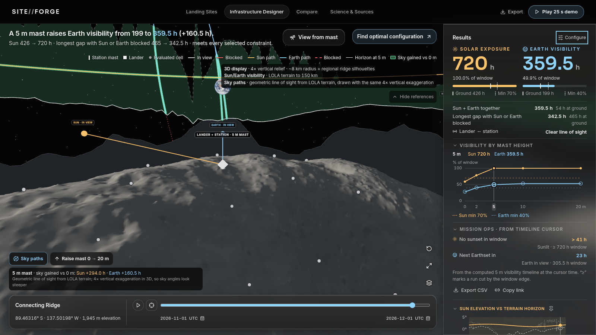
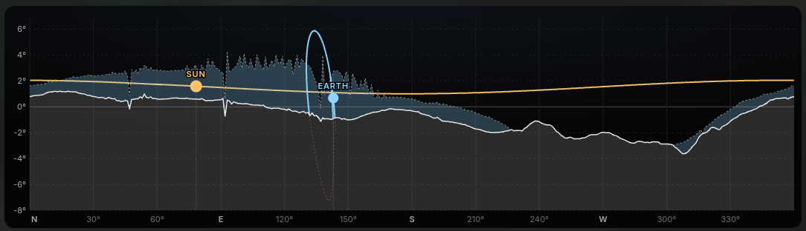

NASA Space Apps 2026 · Lunar Landing Site Navigator
SELENARC
Don't find the perfect landing site. Engineer one.
Azotadores de Agentes Steven Molina · Matías Boldrini · Federico Tavano
Connecting Ridge, lunar south pole · NASA LOLA 5 m terrain, real Sun angle (JPL Horizons, 1 Nov 2026) · 2× vertical
SELENARC02 / 07
The problem
Sites are picked, not engineered.
At the south pole the Sun and Earth skim the horizon. Nearby terrain blocks power and comms.
~2°
maximum Sun elevation
53%
Earth ceiling — libration
465h
longest Sun + Earth blackout on the ground
Connecting Ridge, Nov 2026 (720 h). Blackout: Ridge A, 0 m, live app. Sun elevation and Earth ceiling: JPL Horizons over the same month. Geometric line of sight.
SELENARC03 / 07
The solution
Raise a mast. Watch the horizon drop.
01Pick a south-pole site and dates
02Place a mast, 0–20 m
03See Sun and Earth paths in the 3D sky, and the 360° view from the mast top
04Optimizer finds the smallest mast

View from mast · 5 m

Live app (main 11924de), Ridge A, 5 m mast, Nov 2026 window: sky gained vs 0 m Sun +294.0 h, Earth +160.5 h; Sun 720 h (100%), Earth 359.5 h. Panorama: geometric line of sight, no vertical exaggeration.
SELENARC04 / 07
Key result · Ridge A
A 5 m mast does most of the work.
Earth line-of-sight hours by mast height
199
359.5
382
382
no gain
0 m
5 m
10 m
20 m
100%
Sun from 5 m, Nov 2026 window · 59.2% on the ground
342.5 h
longest blackout at 5 m · under the 360 h limit (465 h on the ground)
17 / 130
configurations feasible · optimizer picks 5 m
Ridge A, Connecting Ridge · 1 Nov–1 Dec 2026, 720 h · live app engine on NASA PGDA LOLA 78 + 90 and JPL Horizons · geometric line of sight · above 10 m: no gain
SELENARC05 / 07
Validity
Real NASA data. Tested. Honest limits.
150km
NASA LOLA terrain 5 m local + 80 m regional horizon
91
automated tests, all passing 37 Python + 54 Node
0→297.5h
independent cross-check Point B, 10 m mast
Prior workBuilt on Mazarico 2011, Gläser 2014, Barker 2021 (PGDA 78). We turn published science into an interactive Nov 2026–Apr 2027 mast trade.
Limits: geometric line of sight only — not link budget or power. Six months (Nov 2026–Apr 2027), Ridge A and Ridge B.
Data: PGDA LOLA product 78 (Site01, 5 m) and 90 (80 m) · JPL Horizons Sun/Earth ephemerides. Point B: flat shoulder 290 m from the summit, chosen to show the mast effect — not the app's Ridge A; joint Sun + Earth hours.
SELENARC06 / 07
Impact
Faster, more honest trade studies.
Mission planners
Re-run site and date trades when schedules slip.
Power & comms siting
Size the smallest mast that meets the target.
Education
Show why meters of height matter at the pole.
Built for Artemis-class and CLPS south-pole landers. Runs in the browser. No install.
NextExtend the pipeline to Artemis III candidate regions that already have PGDA 78 5 m tiles: Malapert, Nobile Rim 1 & 2, Haworth, de Gerlache. NASA publishes regions, not exact points.
SELENARC07 / 07
Don't find the perfect landing site. Engineer one.
siteforge-moon.vercel.app
github.com/MatiasBoldrini/Azotadores-de-agentes-
Team
Azotadores de Agentes Steven Molina · Matías Boldrini · Federico Tavano
NASA data
PGDA LOLA 78 · Site01, 5 m PGDA LOLA 90 · 80 m regional